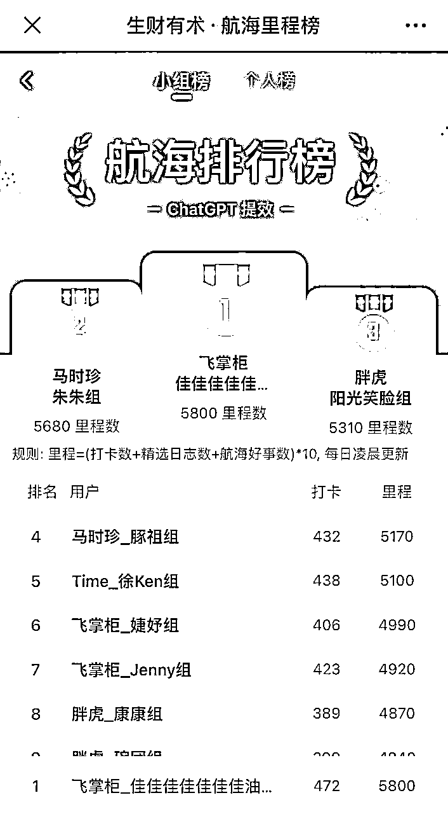
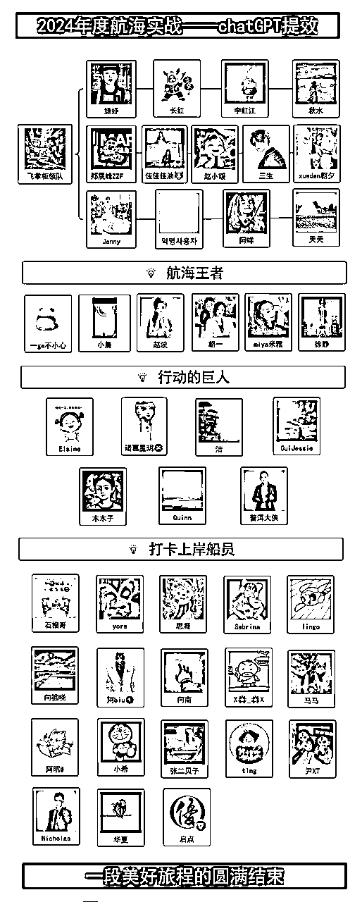
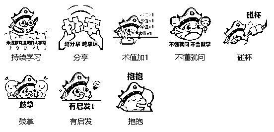
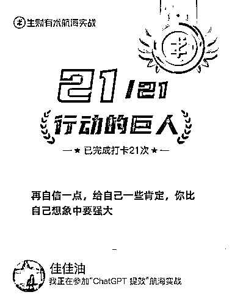
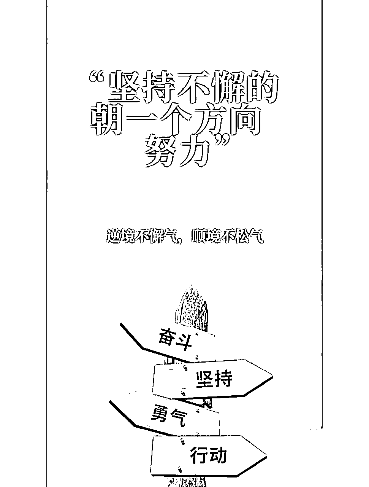

来源：https://v1ddbysd810.feishu.cn/docx/UbkIdUQV1oWn65xAvZacu6Ern1f
哈喽哈喽～大家好，我是佳佳油🐮，以探索世界的乐趣为己任的探险者。
这个六月，注定是一个充满活力的开端，也是一个硕果累累的月份。
第一次参加航海实战，同时以志愿者的身份参加了这次的chatGPT航海，开启了一场新奇的旅程。
解锁了不一样的体验，不仅收获了一群并肩作战的战友们，更有幸结识了众多才华横溢的伙伴。
时光飞逝，如同白驹过隙，转眼间，本期的航海探险也即将画上圆满的句号。
作为志愿者，着手进行一次深刻的复盘与总结，这不仅是对自己投入与时间的回顾，也是一次旨在分享、利他的宝贵经验分享~
1、航海人数：35位勇士（期间退出2位，围观2位）
2、上岸人数：31位勇士（全员成功上岸）
3、整体上岸率：100%（超出预期，原先在志愿者表格上只写85%）
实现小组里程榜第一，其中6⃣️人解锁“航海王者”称号，7⃣️人解锁“行动的巨人”称号。

本次chatGPT航海为大家配置了非常“豪华”的阵容，包括：
1、官方运营团队：萌虎、瓜斯
2、教练团队：直播+答疑教练（云舒、孟禹、菜菜、在下小曾、拔刀刘）、点评+答疑教练（黄浩在观察）、答疑教练（一登Eden、温戈-文哥、奶昔、老江）
3、领队：飞掌柜
4、志愿者团队：三秋叶、阿水、三生、Jenny、长红、赵小暖、朝夕、岁月静好.、婕妤、阿咩、佳佳佳佳佳佳佳油🐮、秋水、李虹江
以及我的船员们：

本次分享通过以下三个模块展开：
1、细述本次志愿者之旅的工作点滴，记录成长与付出。
2、揭秘如何攀登至里程榜之巅，分享实战中的靠谱策略与技巧。
3、分享作为志愿者的心路历程，感悟服务的意义与价值。
随着六月的到来，航海志愿者的行动正式启动，领队纷纷来认领我们，准备迎接即将到来的冒险。
一开始并不知道有志愿者这个工作，报名了航海实战ChatGPT提效项目。
关于志愿者的报名的第一志愿是视频号带货，
第二志愿则是chatGPT提效项目等其他项目（或许是因为选择太多，我被调剂到了其他项目吧）
最终，我被分配到了chatGPT提效项目的领队下
当时那一刻，我有一些呆住
刚加上领队之后我就询问，是不能调剂了吗（小❓迷茫脸）
PS:——当时我怎么这么执着视频号啊，哈哈。现在回想起来，好像也没明白。
领队给我的答复：
没事，咱们GPT也很好
干翻他们
这就是缘分
可能真的是命运的安排，领队的回复让我豁然开朗，
很幸运去成为ChatGPT提效项目的志愿者，一路紧跟大家的步伐，不断学习，不断精进，创造了辉煌。
首先自己要对于志愿者手册的内容熟悉，它是我们投身志愿服务的坚实基础，也是我们必不可少的技能和有力工具。
再者思考你自身对于志愿者的理解是什么。我认为它是一种艺术——一门关于陪伴与鼓励的艺术，可能是我对它的一种定位。它不仅仅是一个标签，更会是我们心中那份小小的使命，让我们在帮助他人的同时，也收获了满满的幸福和成长。
我开始了与35位船员的联系工作，零零总总分了三天加完（老帐号不惧怕风险）
ps：（小tips）
确实可以先加新人（LV0），通常他们会比较期待
这块长经验了，因为我是从头加到尾的，没有做特别的区分
志愿者群内分享了便捷的插件，但是作为软件小新手，我选择了不深入研究，简单尝试了一下没搞懂，索性还是1V1手动来做吧，尽管这看起来有些繁琐。（下次航海再尝试吧🤭）
其中35中有两位船员中因为自身原因，先行退出。留有33为勇士继续踏上了充满挑战的征程。
ps：（小tips）
一定要在规定的时间内询问是否需要提前下船，不然错过时间就错过退还保证金时间了。
借鉴并迭代了老志愿者们的专业话术，这里注意需要区分新老船员的不同话术
以下可参考，一定程度上可进行修改。
新船员：
哈喽，哈喽，新航员，看到是第 1 次参加航海，这边需要你点击关注#视频号：航海实战 预约06月12日的开船直播，具体的航海规则会在直播中进行讲解，记得来参加哦~
在上船之前，需要点击#公众号：生财有术服务号，关注公众号→在右上角[...]、设置→通知消息管理、打开通知
后续打卡提醒、好事推荐等内容，都会通过服务号传达给你，通知要打开才可以收到消息哈
~
接下来我会邀请你进入②个航海大群，一个是航海交流群（日常交流答疑），一个是禁言群（重要信息同步）。
老船员：
哈喽，哈喽，老航海船员，看到你之前参加过航海，那具体的航海规则就不多说啦，马不停蹄就来邀你进群哈！！！
再最后加入：
已邀你进#航海交流群 和 #禁言通知群 了，完成①②后拍拍我就算正式上船啦~
①进入【交流群】和【通知群】，修改群昵称为：{群昵称}
②点击关注 #公众号：生财有术服务号，不遗漏航海相关通知
③点击关注#视频号：航海实战，预约开船仪式&开船第一课直播
④#06-13周四 开始实战、复盘打卡，记得完成此行目标，才能退回保障金
⑤有任何问题随时找我或者群里的飞掌柜领队
负责将拉船员们拉进两个大群
一个是航海交流群（日常交流答疑），一个是禁言群（重要信息同步）
中途会有小波折，并非一帆风顺，因为有些船员没有立即回应，我不得不多次提醒他们加入。
向船员做了个简单的小调查（不愧是有经验的志愿者们的总结）
询问船员们对项目的了解情况以及是否需要提醒情况等
简单的小调查：
①小目标：能否完成21天全勤打卡？
②对于本次航海是否有了解，有的话是否有相关实践？
③航海期间我也会提醒你完成至少12次打卡（tips：我们1v1可以提前商量，是否需要提醒你一天打卡的次数，比如早晚各一次等、或者你太过自律完全不需要我的提醒就能每天超积极打卡也没问题）
也再次感受到了人与人的相处不同之处，有的船员特点热情，有的船员不怎么回复，还有的存在持续不回复情况（埋个钩子，后期会在提到，希望你能看到最后），针对不同的船员需要为他们进行定制方案。
紧接着就要迎来开营仪式了，莫名兴奋和期待！
实战的第一天，我发现自己开始就陷入一个奇怪的循环。
由于当天晚上有直播，同时播的比较晚了，导致打卡的人数并不多。
遵循和船员们之前的约定，在十点提醒船员们⏰进行打卡。
紧接着自己也去学习了手册，第一感受好多好多字呀，文字量庞大，作为遇书则困的人来说，尤其是深夜时分，阅读起来颇为吃力，也确实没有看完（我以为第一天就要看完全部的航海手册，又卡bug了）。
然而，我明白自己不可能一夜间将其完全吸收，打算在接下来的时间中，一点一滴地补齐知识的缺口💪
很有意思的是，今天在工作中运用到了ai来做会议纪要，虽然会议讲的内容不是这么重要，但是很意思的是尝试利用ai来帮助完成一件事。
十一点多看了看打卡数据，我久久审视着打卡数据，心中涌起一股强烈的责任感，希望每个人都能完成打卡，让我们成为最优秀的小组。
然而，我也逐渐意识到，作为团队的一员，我不能强求他人按照我的步调前进。每个人的步调和节奏是不一样的，我需要学会尊重和理解。因为作为团队，你不可能要求别人一定按照你的步调来实施，每个人的时间、精力都是不一样的。
放下"过度助人"的执念，这不仅是对他人的宽容，也是对自己的一种释放。我与好友几个小时前才探讨了这个问题，转瞬间，我意识到这同样适用于我自己。
不要被焦虑所困，不要自我消耗，我需要做的是坚守我的本职工作。
铭记，我的名字是志愿者，我的使命是鼓励和帮助，而不是成为一个时间的催促者。
与第一天的焦虑和慌张形成鲜明对比，随后几天我逐渐学会了放下所谓的过度“助人情节”，而结果出乎意料地令人满意。
按照惯例，每晚10点后，对于没有打卡的船员们进行督促信息的发送（傻瓜做法—— 一对一转发文字信息）
虽然方法简单，但却有效。
保持着33人的小团队前行，其中还有4位船员们（自加入群聊后便杳无音信，不回复也不打卡）
这时候会有些力不从心，我想着可能大佬都是这么忙碌的吧，这么安慰自己。
没想到的是其中周末一天其余30位船员们都有打卡，这让我感到无比欣慰。
这一成就直接将我们的小组推向了小组里程榜的首位，这是一份意外的荣誉。
这两天因为我们小组以一马当先的姿态稳居榜首，赢得了领队的高度赞扬。
对于这份荣誉让我既感到惊喜又深感荣幸。
这份殊荣可以说是受宠若惊，同时喜提预约一篇如何成为一个最给力的志愿者，又是内容的大输出。
ps：（小tips）
在空余之时，我发现每天的日记复盘对提升效率有着巨大的帮助。
成功的背后，是我们船员们的不懈努力和团队协作的力量。
我觉得，不是说假（一开始我也以为是吹捧而已但其实结果并不然）
从十几名到遥遥领先，这一转变令人不可置信。
ps：（小tips）
对人对己的积极正向的鼓励真的很效。
其实真的主要还得是我的船员们给力，真没想到能从十几名到第一，我还把这个第一名的好消息发给船员们，大家也积极回应，形成良好的正反馈，同时激励着大家不缺卡积极打卡，真的是良好的一个循环，不仅激励着每个人持续贡献，同时团队之间更加团结。
在最后的几天，突然间被其他小组超越了，我也赶紧着急忙慌地去告诉船员们这个消息，大家也纷纷去打卡。
其实每天我更多的是在10点发个督促消息给船员们，大部分大家都会积极回应我，拍拍我完成打卡。
ps：（小tips）
我们的宝藏后盾领队——飞掌柜，他的各种小妙招效果特别显著。
插播一条——关于在发送催打卡的消息发送的同时，附上打卡链接。这样不仅有效更提高打卡效率。
随着航海实战的第十二天的到来，我们迎来了一个关键的时刻——退还保证金的时间点。
这就意味着有些船员可以上岸了，非常感慨时光的飞逝，整个实战过程已经过半。
更有船员兴奋地向我报喜，他们已经成功"上岸"。
我由衷地为他们感到高兴，这不仅是他们个人的胜利，也是我们整个团队的荣耀。
随着航海之旅渐渐步入尾声，我不禁开始反思，如何不push船员们提升打卡率？
尽管大部分的船员目标是12天打卡完成
作为志愿者的我们，应该在航海之初就与船员们建立起积极的互动，帮助他们养成良好的日常打卡习惯。
同时，鼓励每一位船员挑战自我，冲击21天全勤打卡的目标，以赢得那份象征着荣誉和成就的巨人海报。
再次点名夸奖我们宝藏领队——飞掌柜，他不仅名副其实，更是我们团队中不可或缺的宝贵财富。
举些例子：
比如：中午快吃饭了，今天疯狂星期四，抢肯德基免单，拼手速：生财有术网页版
比如：刻意练习，不断打破+重构，真的不是说说而已。航海第X天，打卡走起！
《GPT航海｜打卡链接》https://scys.com/activity/landing?id=3485&tabIndex=2
对于积极打卡船员给予及时且鼓舞人心的回复:
这打卡速度也太迅速了吧！！ / 就剩几天打卡啦，积极积极在积极！！ /
再接再厉，继续冲刺吧！/ 简直太棒了🤩 / 距离成功的道路不远啦🤩
⚠可休息天数只剩③天了，注意要积极打卡啦，不然就拿不回会保证金了哦😭 等
以及各种给力表情包疯狂乱飞ing，让交流更加生动有趣。
同时，这里有个小tips：
也是我和其他别组的船员聊天感悟，对于积极打卡的成员，我们需要增加与他们的互动性。
因为在航海期间会出现很多船员早上就已经打完打卡，因此晚上的提醒对他们来说可能不再必要。但是他们会是小组的顶梁柱，还是要积极互动，以示认可和鼓励，可以参考第③点。
这个过程不仅限于聊天，朋友圈也是很好的互动地。
无论是点赞还是评论，都可以形成良好的连接。
举些例子：
积极社交，成为E人
社交篇：
比如：讨论一下最近的近况，各自的职业、项目等
比如：分享一些好玩、好吃的的地方（正好在朋友圈看到船员有去你附近的地方，大众点评Lv5的我就前来可以安利各种美食和景点啦）
打卡篇：
比如：通过分享自己的打卡内容和方法，我们可以展示如何以有趣和高效的方式完成任务。
比如：鼓励船员们在日常生活中探索和体验AI软件，无论是工作还是个人生活，都可以找到应用AI的创新方式。
通过这些策略，我们可以有效地降低船员们对打卡难度的感知，使他们更加轻松和愉快地参与到航海实战中。
当教练对船员的日志进行点评时，我们应该迅速响应，给予船员积极的反馈，增加曝光。
这样的反馈不仅能够保持船员的积极性，还能扩大其在整个团队中的影响力。
同时我们志愿者还可以对于船员的日志进行点赞和评论。
对于船员们的日志，为他们每一篇都点了赞、留了言，传达了对船员们努力的肯定。
然而不知道他们看到没有 🤣哈哈......
在最初的阶段，我每天自己打完卡之后就像在认真批改作业一样。
因为这不仅可以帮助我了解到船员们的进度，同时我也会有所收获。
生财的一套表情包小虎鲸特别贴合，完全可以激励船员们的打卡行为。
还没有的快来加我(传说中的留钩子)来问问他的专辑名字

打语音电话！！！直接沟通的力量
有时候，一通语音电话能够带来意想不到的效果。
尽管这种方法可能不是每位船员都乐于接受的（坦白说，我自己也有点犹豫），但它确实有效。
一共打了3-5位船员的语音，其中只有一名船员接通了，于是我开始了我的"演讲"。。
搞笑的对话：
第二天在我还没有督促的时候已经打上了卡，我不禁开玩笑道：你今天怎么这么棒，这么迅速就打好卡了呀！
他回复我：害怕 。（我：emmmmm......让我不禁哑然失笑）
虽然但是，
通过这个方法成功挽救一名船员，在最后13天内积极打卡成功上岸。
小tips：
但是建议用在打卡还剩余12-14天浮动，因为这就表明这位船员存在落水风险，需要密切关注。
船员们的性格和行为模式多种多样，我们可以将他们分为以下几类，并采取相应的互动策略：
①积极打卡型：积极打卡，完全不需要操心类
——疯狂输出的情绪价值，通过表达赞赏和鼓励来增强他们的积极性
②偶尔提醒型：偶尔需要提醒类
——疯狂输出的情绪价值，偶尔需要一点提醒，并通过友好的提醒和积极的反馈来帮助他们保持动力
③沉默型：没反应不回复但打卡类
——定期的回访询问关心，疯狂输出的情绪价值，尽管这些船员不常回复，但他们仍然坚持打卡，这是很好的点
④无响应型：没反应不回复也不打卡类
——必杀技+定期的回访询问关心，疯狂输出的情绪价值，以期激发他们的参与热情
作为志愿者的我们，我们的核心任务是提供服务和支持，以及陪伴。
打卡与否、参与程度都是个人的选择，正如俗语所说，你永远无法唤醒一个装睡的人，我们应尊重每个人的自主决定。
作为志愿者，我觉得首先自身的示范性也是很好的榜样。
这也是我慎重考虑之后没有参加7月的视频好口播志愿者的原因之一，
我更希望能够与船员们同步航行，共同进步，这不仅是对船员们的支持，也是对自己职责的忠实履行。

其实航海实战的第一天，我作为新人志愿者就开始陷入了怪圈。
希望每个人都能按时完成打卡，让我们小组成为最优秀的小组。然而，在过程中，我也逐渐意识到，作为团队的一员，我不能强求他人一定要按照我的步调前进。每个人的步调和节奏是不一样的，我需要学会尊重和理解，但是要找到正确的解决方案去执行。这里我也深刻体会到了团队协作的力量。
从起初的落后到最终的领先，这一转变，是船员们的不懈努力的最好证明。
我们的领队，飞掌柜，以其丰富的经验和智慧，为我们志愿者们出谋划策，分享了他自己的宝贵的策略。
我们的教练们，通过他们的成功案例和讲解，给我们带来了宝贵的分享和经验。
在这次的旅程中，虽然焦虑过，但是更多的是收获，也成长了很多，在帮助、支持他人中我会获得能量和愉悦。
通过尝试了多种小技巧来激励团队，这些小小的举措，也确实带来了巨大的正面影响。
它们不仅提高了团队的打卡率，更激发了大家的积极性和创造力。
我也意识到你的成功确实会更多吸引别人的目光和关注，所以需要更加加把劲，在下次做得更好。
随着这次航海志愿者之旅的圆满结束，我心中充满了感激与收获。这段旅程不仅让我结识了一群志同道合的伙伴，也让我在服务与合作中获得了成长与启迪。
感谢大家的陪伴和支持，让我们的航海之旅不仅充满成就，更添了几分乐趣。
让我们怀着激动的心情，期待下一次的冒险旅程！
这既是一段美好旅程的圆满结束，也预示着更多激动人心的开始。
感谢这次航海，感谢每一位同行的伙伴。
未来，让我们继续在志愿服务的道路上，共同探索，共同成长。
最后祝大家都能FOOD流油，财源滚滚💰一起生财有术。
